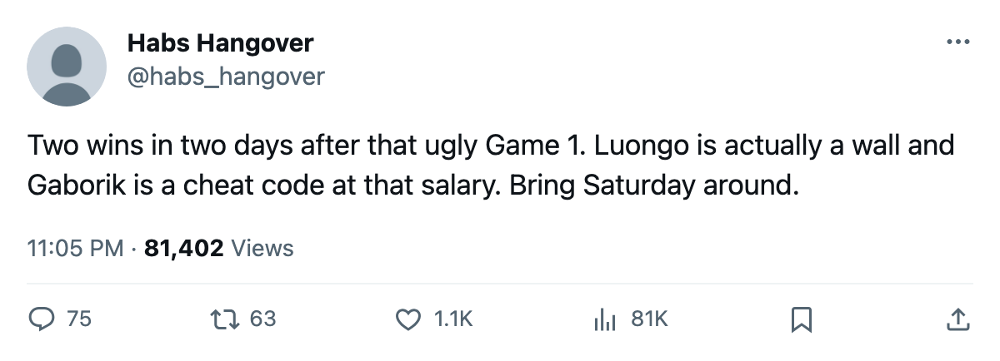

LEAFS 4, PENGUINS 2, series 2-1: Gaborik reaches 10, Luongo holds at 1.73
A 4-2 road win puts Toronto ahead in the second round. Game 4 goes Saturday at the same building.
 Sam OkaforLeafs beat reporter · Queen City Telegram
Sam OkaforLeafs beat reporter · Queen City Telegram
The  Toronto Maple Leafs Maple Leafs won Game 3 in Pittsburgh, 4-2, on Tuesday night to lead the second-round series 2-1. Game 4 goes at
Toronto Maple Leafs Maple Leafs won Game 3 in Pittsburgh, 4-2, on Tuesday night to lead the second-round series 2-1. Game 4 goes at  Pittsburgh Penguins on 2005-04-28.
Pittsburgh Penguins on 2005-04-28.
 Marian Gaborik99 has 4 goals and 6 assists through 7 playoff games.
Marian Gaborik99 has 4 goals and 6 assists through 7 playoff games.  Gary Roberts85 carries 2 and 6.
Gary Roberts85 carries 2 and 6.  Mats Sundin92 sits at 3 and 3.
Mats Sundin92 sits at 3 and 3.  Alexander Mogilny89 has 2 goals and an assist.
Alexander Mogilny89 has 2 goals and an assist.
 Roberto Luongo97 is 5-2 this spring with a 1.73 GAA and a .953 save percentage. He has started 7 games while Ed Belfour, 40 years old on a $6.50M contract, watches from the bench.
Roberto Luongo97 is 5-2 this spring with a 1.73 GAA and a .953 save percentage. He has started 7 games while Ed Belfour, 40 years old on a $6.50M contract, watches from the bench.
From 19 shots to seven goals in two nights
Toronto scored 3 in Game 2 at the Air Canada Centre and 4 on the road tonight, a 7-goal swing over two games after the 19-shot, 1-3 loss on 2005-04-22 that put this series in doubt after one period.
 Ramzi Abid80 returns to Pittsburgh on Saturday. He was dealt from the Penguins on 2005-01-25.
Ramzi Abid80 returns to Pittsburgh on Saturday. He was dealt from the Penguins on 2005-01-25.  Mikael Renberg75 suits up for Pittsburgh against the club that traded him on the same date.
Mikael Renberg75 suits up for Pittsburgh against the club that traded him on the same date.
| Player | GP | G | A | Pts |
|---|---|---|---|---|
| [[player:308\|Gaborik]] | 7 | 4 | 6 | 10 |
| [[player:841\|Roberts]] | 7 | 2 | 6 | 8 |
| [[player:961\|Sundin]] | 7 | 3 | 3 | 6 |
| [[player:673\|Mogilny]] | 7 | 2 | 1 | 3 |
Pittsburgh Penguins carries a spread attack.  Mario Lemieux85 has 2 goals and 6 assists in 8 postseason games. Eric Meloche75 sits at 5 and 2,
Mario Lemieux85 has 2 goals and 6 assists in 8 postseason games. Eric Meloche75 sits at 5 and 2,  Shane Willis69 at 3 and 2,
Shane Willis69 at 3 and 2,  Martin Straka83 at 1 and 4. The Penguins won the series opener before dropping two straight.
Martin Straka83 at 1 and 4. The Penguins won the series opener before dropping two straight.
Toronto went 6-1-0 against Pittsburgh in the regular season, outscoring them 28-16. This spring the Leafs hold a 2-1 edge and travel back to the same building on Saturday.
